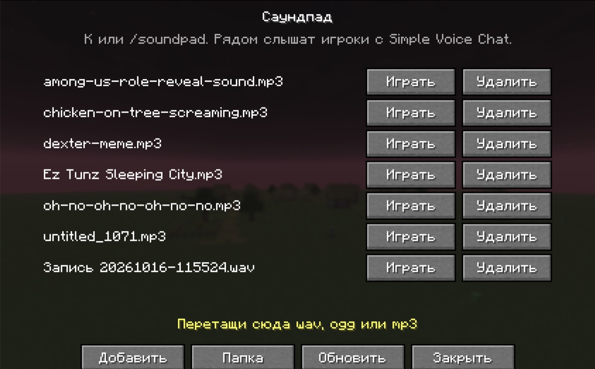
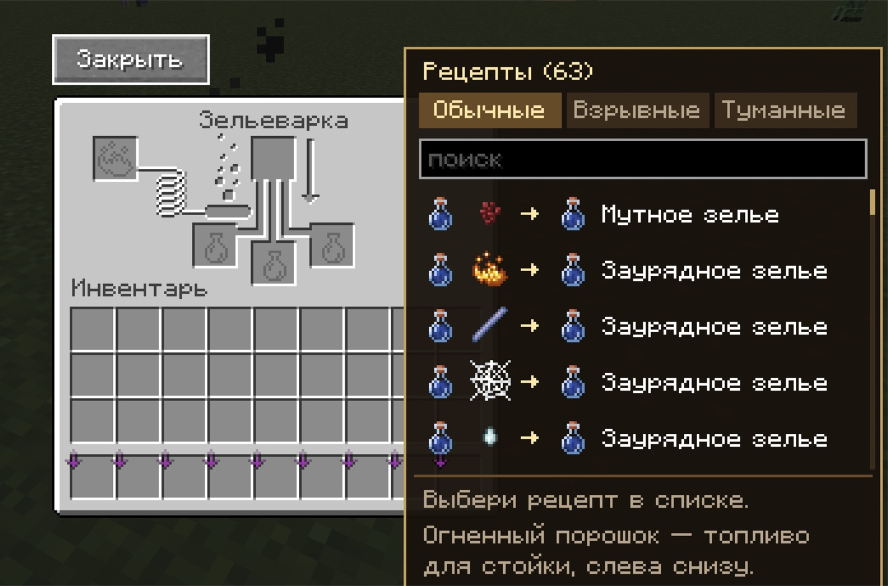
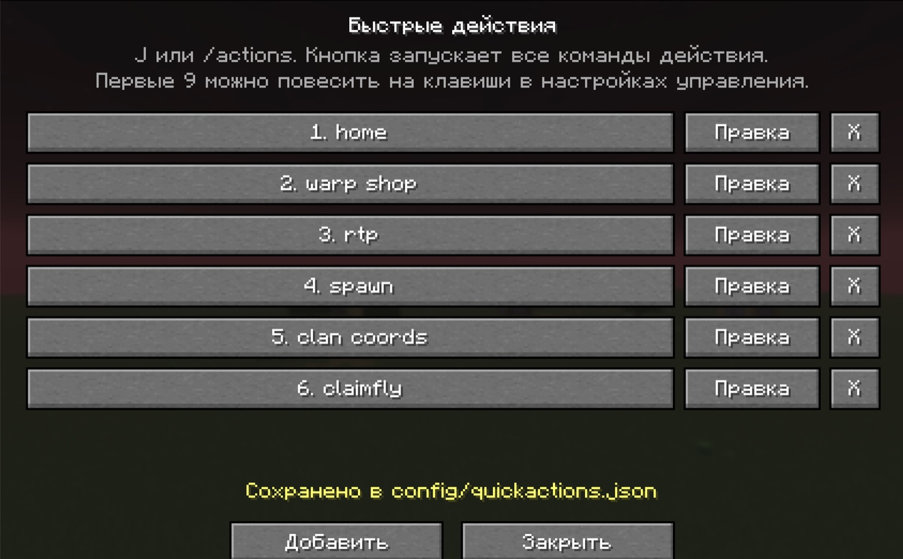
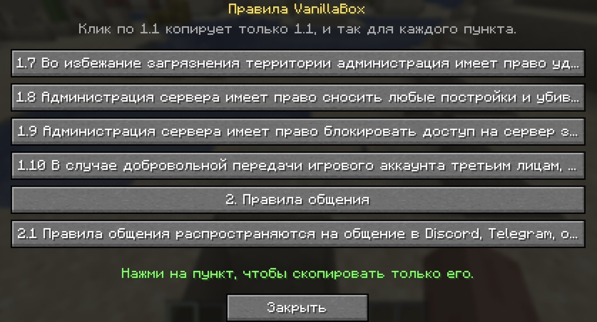
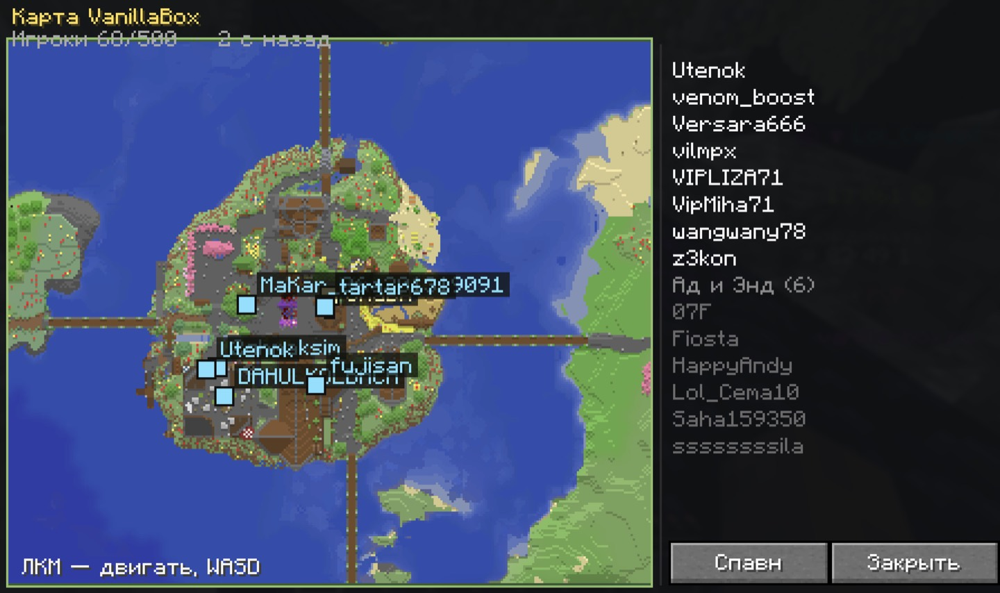
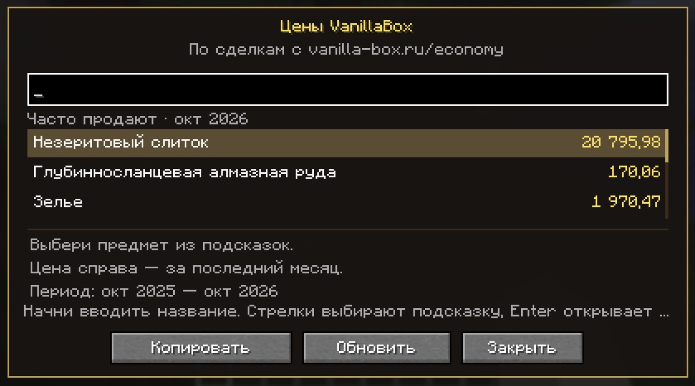

Soundpad
Свои звуки, которые слышат игроки с Simple Voice Chat. Ползунок громкости от 0 до 100% запоминается. Меню открывается клавишей «Открыть саундпад».
Скачать soundpad-1.0.0.jar · 39 КБMinecraft 26.3 · Fabric
Fabric Loader 0.19.5+ · Java 25 · Fabric API
Саундпад для голосового чата, рецепты зелий в зельеварке, панель быстрых команд, меню правил VanillaBox, живая карта сервера и цены предметов. Скачай jar и положи его в папку mods.

Свои звуки, которые слышат игроки с Simple Voice Chat. Ползунок громкости от 0 до 100% запоминается. Меню открывается клавишей «Открыть саундпад».
Скачать soundpad-1.0.0.jar · 39 КБ
Кнопка с рецептами зелий прямо в зельеварке. Открывает справочник: из чего варится каждое зелье.
Скачать brewbook-1.0.0.jar · 24 КБ
Панель быстрых команд: записал несколько команд и запускаешь их одной кнопкой. Девять слотов на отдельные клавиши.
Скачать quickactions-1.0.0-fabric-26.3.jar · 21 КБ
Команда /rules открывает меню правил VanillaBox. Клик по пункту копирует только его, соседние строки в буфер не попадают.
Скачать rules-1.0.0.jar · 14 КБ
Карта VanillaBox в игре: варпы и игроки с сайта, список обновляется сам. Открывается клавишей «Карта сервера» или командами /map и /карта.
Скачать livemap-1.0.0.jar · 34 КБ
Команды /price и /цена открывают поиск цены предмета по сделкам с vanilla-box.ru. Справа цена за последний месяц, кнопка «Копировать» кладёт её в буфер.
Скачать price-1.0.0.jar · 29 КБWindows %appdata%\.minecraft\mods
macOS ~/Library/Application Support/minecraft/mods
Linux ~/.minecraft/mods